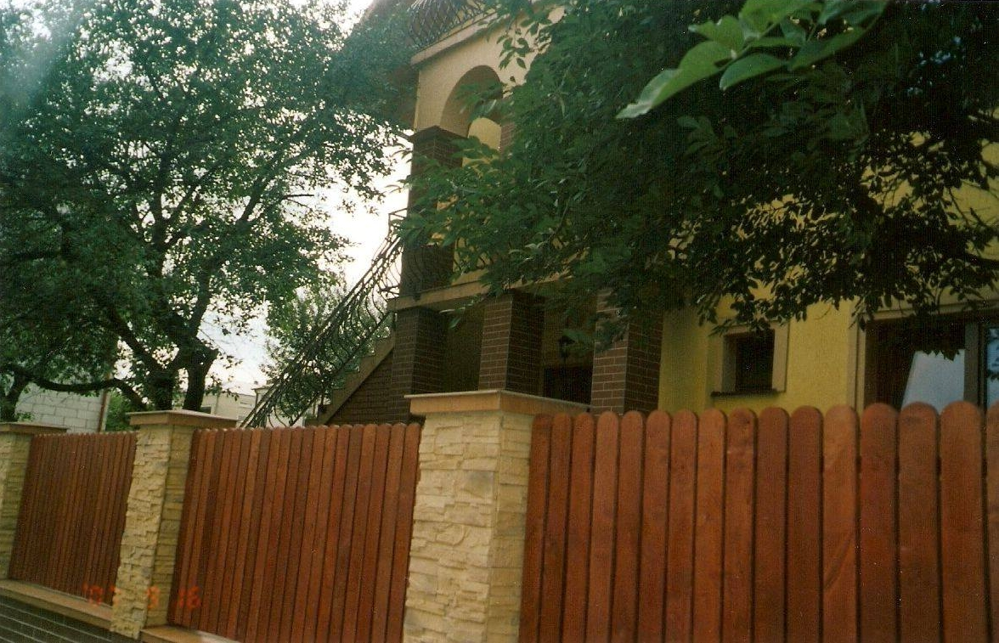

Szymon Howorus's design studio. |
The studio deals with architectural, constructional and technological design as well as other industries in the field of construction - we make adaptations of repeatable projects, projects from scratch, consultancy as well as author and construction supervision. We have been operating since May 2002. So far, we have successfully implemented many of the investors' plans from the Zamo¶æ region and the Lublin province. At work we follow and take into account the requirements of investors, we also advise and explain various ambiguities in the field of construction in order to improve the construction process and inform the client about the latest solutions in the field of construction technology on the market. We work with many contractors and companies from the Lublin province and its surroundings.We realize that shaping space through architecture solutions is an important issue affecting the well-being and comfort of people in urbanized areas, so we are guided by the principles of ergonomics and functionality, which is visible in the projects we carry out. We have experience in designing the most varied construction objects, from commercial buildings to large-scale facilities. We care about customer satisfaction so we try to match every requirement. We invite everyone who wants to start from building their own home, as well as other investors who want to implement other objects.